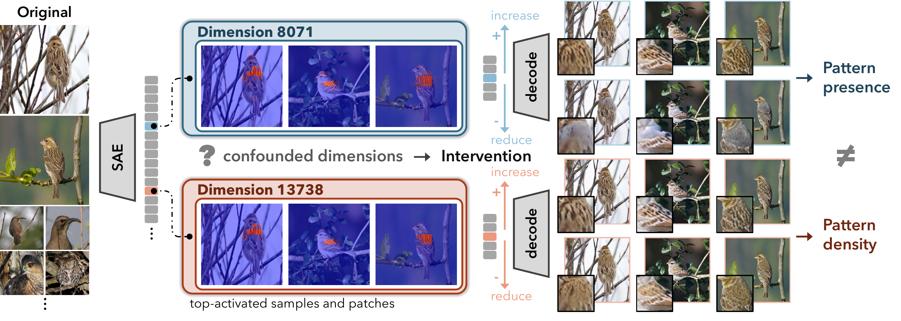
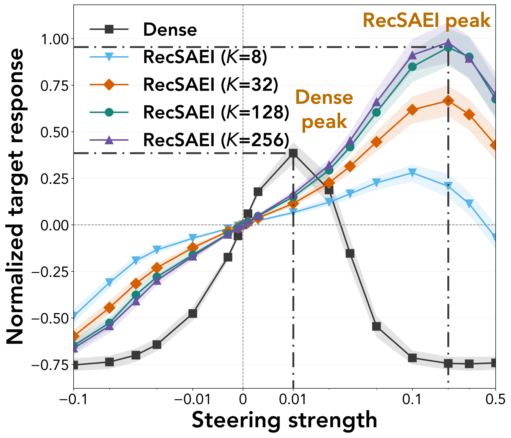

Reconstructive SAE Intervention
From Activation to InterventionInterpreting Sparse Visual Features
through Reconstruction

Abstract
Sparse autoencoders (SAEs) decompose visual representations into individual features, offering a promising basis for explaining model behavior. Interpreting these features typically relies on images or pixel regions that most strongly activate them. However, this evidence becomes ambiguous when multiple features with different semantics are frequently activated in the same locations, such as texture and color of the same patterns.
We propose Reconstructive SAE Intervention (RecSAEI), a framework that shifts feature explanation from passive observation to active visual reconstruction. By intervening on representations along SAE decoder directions and reconstructing the visual output, we provide direct evidence of a feature’s semantic meaning. We demonstrate that our method successfully disambiguates feature meanings across multiple datasets and vision encoders.
Furthermore, our framework grounds [CLS] SAE interventions in a sparse set of patch SAE decoder directions. Beyond stable target response, this attribution also exposes the compositional relationship between elementary visual patterns and high-level semantics. Our results advocate for intervention reconstruction as an essential complementary signal for explaining neural networks.
Patch SAE intervention
For a patch SAE feature, usually from the second-last transformer layer, we increase or decrease its activation in the patches with large activations. We then pass the modified representations through the rest of the encoder and reconstruct the image with a representation autoencoder (RAE). Comparing the reconstruction changes reveals what visual property the feature represents.
See what the features change
Move the slider to apply the reconstructive intervention. The circle and diamond indicate two features. Although they have almost identical activation patterns, reconstructions reveal their accurate sematics.
Quantitative Results
To evaluate how well the evidence explains a patch SAE feature, we give an evaluator examples with high and low feature activations. The evaluator then predicts which of two images has a higher activation for the feature. We compare the prediction accuracy with and without intervention reconstructions from increasing and decreasing the feature.
| Dataset | DINOv3 | SigLIP 2 | ||
|---|---|---|---|---|
| Examples | + Intervention | Examples | + Intervention | |
| NABirds | 73.0 | 74.8 | 67.9 | 69.2 |
| CUB | 70.3 | 71.4 | 69.7 | 71.1 |
| Cars | 73.2 | 74.3 | 69.4 | 71.0 |
| ImageNet | 76.9 | 76.2 | 73.5 | 73.9 |
[CLS] SAE intervention
A [CLS] SAE feature integrates information from patch tokens and directly connects to downstream tasks. But the [CLS] token cannot be decoded directly into an image. RecSAEI attributes the feature from the last layer to patch tokens from the previous layer, identifies active and influential patch SAE features, and combines their decoder directions. Steering these patch representations changes the target [CLS] feature and produces an intervention reconstruction.
This sparse steering produces more consistent target-feature responses and better selectivity than dense gradient steering, where the patch-level gradients are used to modify the image.

Dense and sparse [CLS] steering
Compare dense gradient steering with RecSAEI's sparse patch-feature steering for the same [CLS] feature. Both use the same strength and steering budget.
More examples
Patch dimension
[CLS] dimension
Citation
The arXiv fields in this citation template will be updated when the preprint is available.
@article{gu_recsaei,
title = {From Activation to Intervention: Interpreting
Sparse Visual Features through Reconstruction},
author = {Gu, Jianyang and Beattie, Jacob and Khurana, Mridul
and Chae, Julia and Xiao, Xi and Zhang, Cheng
and Karpatne, Anuj and Chao, Wei-Lun and Beery, Sara
and Berger-Wolf, Tanya},
journal = {arXiv preprint},
year = {YEAR},
eprint = {ARXIV_ID},
archivePrefix = {arXiv}
}